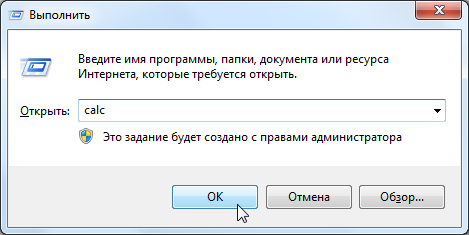

Калькулятор можно окрыть несколькими способами.
Пуск -> Все программы -> Стандартные -> Калькулятор.
Сам калькулятор находится в C:\Windows\System32\calc.exe.
Нажми Win + R и введи слово calc.

Win - клавиша с логотипом Windows на клавиатуре.
Окно Выполнить также можно открыть через Пуск -> Все программы -> Стандартные -> Выполнить.
Открой калькулятор, затем закрепи его на панели задач, нажав правой кнопкой мыши по его значку.
Теперь ты сможешь запускать калькулятор с панели задач.
Переключи калькулятор в режим Программист во вкладке Вид.

При делении чисел в режиме Программист ты получишь целое число без остатка, хотя изредка именно такой результат тебе и будет нужен. Для классической работы с десятичными числами переключись обратно на Обычный режим.
Любое введенное в калькуляторе число можно переводить в другую систему счисления (Hex, Dec и Bin), переключая соответствующие опции.

Восьмеричная система счисления (Oct) не представляет интереса для ромхакинга.
После перевода из одной системы счисления в другую, дальнейший ввод числа приведет к тому, что ввод начнется заново.
Переключившись на опцию Hex, можно вводить латинские буквы A, B, C, D, E и F с клавиатуры, без необходимости переключать раскладку на английскую.
Кликая по первым 8-ми битам на верхней панели и меняя их состояние на 0 или 1, ты можешь создавать до 256-ти комбинаций битов, конструируя из них байты от #$00 до #$FF.

Чаще всего нужно предварительно включить опцию Hex. Биты в других системах счисления вряд ли будут тебе интересны.
После переключения состояния битов, дальнейший ввод числа приведет к тому, что ввод начнется заново.
Некоторые кнопки в левой части калькулятора работают схожим образом с некоторыми командами процессора 6502.
Чаще всего нужно предварительно включить опцию Hex, изредка Bin. Операции над десятичными числами вряд ли будут тебе интересны.